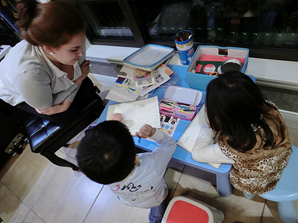
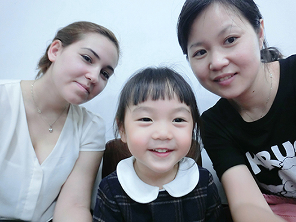
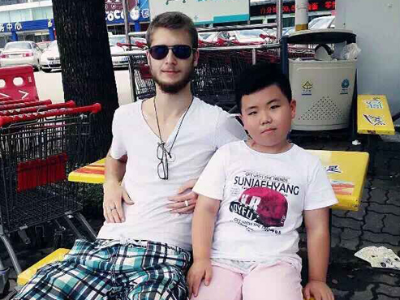

Aupair的作用和价值
互惠生可以为互惠家庭提供全天候外语交流环境；零距离异国文化接触；国际化视野拓展；全新家庭教育理念；良好的语言环境基础；丰富多彩的家庭生活。具体作用包括但不限于：
外语环境

每个孩子，都在从小错误地学习英语 任何从念ABC 、从认单词、从学语法开始的幼儿英语都是错误的。对孩子而言，玩就是任务。就是应该用英语做游戏…… ——陈琳（教育部英语教学专家组组长，北外著名英语教授）
互惠生，全年近2000小时陪伴孩子和家人，足以让孩子像学母语一样掌握英语！
外语不是学出来的，是用出来的！而3年近6000小时的陪伴和熏陶，这种完美的身边语言环境，还足以让孩子掌握除英语之外的至少第二门、第三门外语。
想象一下，在社交聚会上，您的孩子用英语、法语和德语分别与美国人法国人德国人谈笑风生……
这一代孩子长大以后，英语交流能力已不再是优势！英语像母语一样，同时掌握第二门甚至第三门外语才是真正的语言优势！
互惠生提供的外语环境不是课堂，而是生活！
在生活中使用和交流，给孩子一个“不得不”使用外语的环境，这种学习效果是普通课堂或外教所无法实现的。并且这种环境不是需要每天不停地听说才能实现效果，让互惠生和孩子都有时间去发呆吧！发呆过后的交流，更有效果！
甚至爸爸妈妈多年不练的英语也会迅速取得效果！您真的没有必要再去英语班学习了，因为就在家里随时随地都可以练习英语……
性格培养

互惠生，就是与孩子共同生活和陪伴成长的外国哥哥和姐姐。
这些来自欧美并经过我们严格挑选和培训的优秀大学生，除了将外语环境和异国文化深深地带入中国高端家庭外，更多地会以一个榜样的身份，每天潜移默化地用良好的学习习惯和生活习惯影响着孩子，从而培养出孩子开朗的性格和积极的人生态度。
当很多互惠家庭父母对我们说：现在孩子每天都和外国姐姐有说不完的话，甚至有了他们自己的小秘密！那种不自觉流露出来的“嫉妒”，却满含着自豪和欣慰……
与其说是英语学习，不如说是陪伴式教育。这种教育环境下的亲情，就让孩子收获了最重要的性格养成。
未来的孩子出国留学或移民之路的真正成功，只有不到40%的因素取决于课堂生活，更重要的因素是孩子在国外的业余生活。能否成功融入西方文化，而不是每天下课之后就开始中国学生的聚会或上网消磨时间，这才是未来出国成功与否的关键!
西方文化

孩子需要从小体验真正的西方文化
一群热情洋溢并对中国充满好感的年轻人们除了能够陪伴您的孩子和家人以外，更重要的是，他们希望体验，更愿意分享。他们对中国的一切都充满好奇，也一定会满足中国孩子对西方文化的好奇心：原来美国人并不都像电视里那样，原来德国年轻人也同样活泼好动……
外国互惠生，可以让孩子从小就接触并熟悉以至接纳中西文化差异，从而为未来的出国打下坚实的基础。美国、德国、英国、加拿大哪个国家更适合，孩子的世界观应该基于全面和真实的基础上，这就需要他们从小能够观世界！
互惠生活中发生的点点滴滴，包括产生的家庭矛盾，对孩子最终都是一种收获：为什么西方人那么重视时间表，为什么他们对于自己的利益争取都直接了当，为什么他们会逐渐适应中国文化……
每一次的矛盾的产生，每一次矛盾的处理，都是让中国家庭和孩子以最真实的感受和最近距离的观察，得到最现代的西方文化观念，这是未来孩子出国留学的坚实基础。
中西文化差异， no right no wrong, only difference.(没有对错，只有不同）这种生活中体验到的真正差异，就给了孩子任何教科书上都学不到的见识！